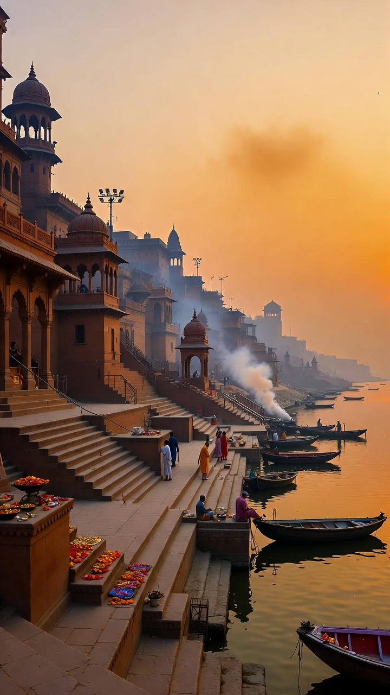
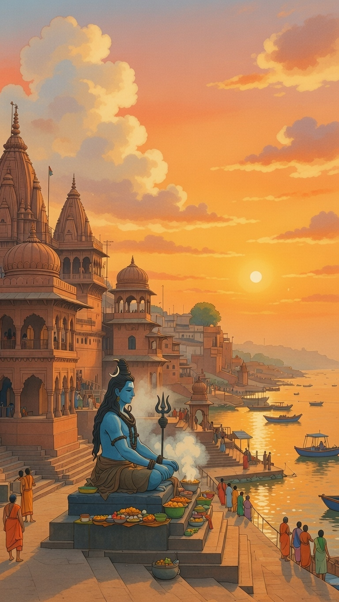
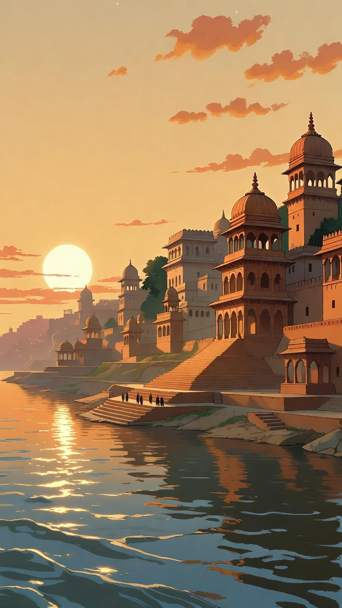

Serving free meals to pilgrims and underprivileged people in the sacred city of Kashi through Annadan Seva.
Support Annadan SevaVishwa Kashi Ganges Charitable Trust is a charitable initiative based in Varanasi, Uttar Pradesh. The trust is established with the purpose of serving humanity through Annadan Seva (food donation).
Every day thousands of devotees travel to Kashi to seek blessings of Mahadev. Many pilgrims come from different states with limited financial support. At the same time, several local families in Varanasi struggle to afford basic meals.
Our trust works to ensure that no devotee and no needy person sleeps hungry in the holy land of Kashi.
Our work is rooted in the values of Seva (service), Dharma (righteousness), and Sanskar (cultural values).

Meals Served Daily
Days of Seva
Families Supported
Service Location
To provide free and dignified meals to pilgrims and underprivileged people in Varanasi through transparent and community-supported charitable efforts.
To build a sustainable Annadan system in Kashi where every visitor and every needy person has access to at least one free meal daily.
Regular free meal distribution programs for devotees visiting Kashi Vishwanath and underprivileged individuals.
Basic food assistance for pilgrims traveling long distances for darshan.
Sponsorship of meals on birthdays, anniversaries, religious and remembrance occasions.


Kashi is one of the most sacred cities in India. Providing food in this holy land is considered an act of great virtue.
Annadan is not just charity. It is service to humanity and devotion to Mahadev.
Account Name: Vishwa Kashi Ganges Charitable Trust
Bank: State Bank of India
Account No: 12345678901
IFSC: SBIN0000001
Contact: 8185834172
D-28/174, Pandey Haveli, Varanasi – 221001
Phone: 8185834172 / 8004355586 / 9506302170